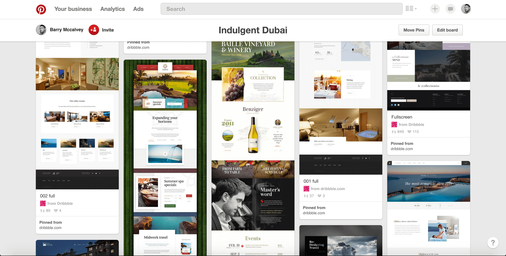
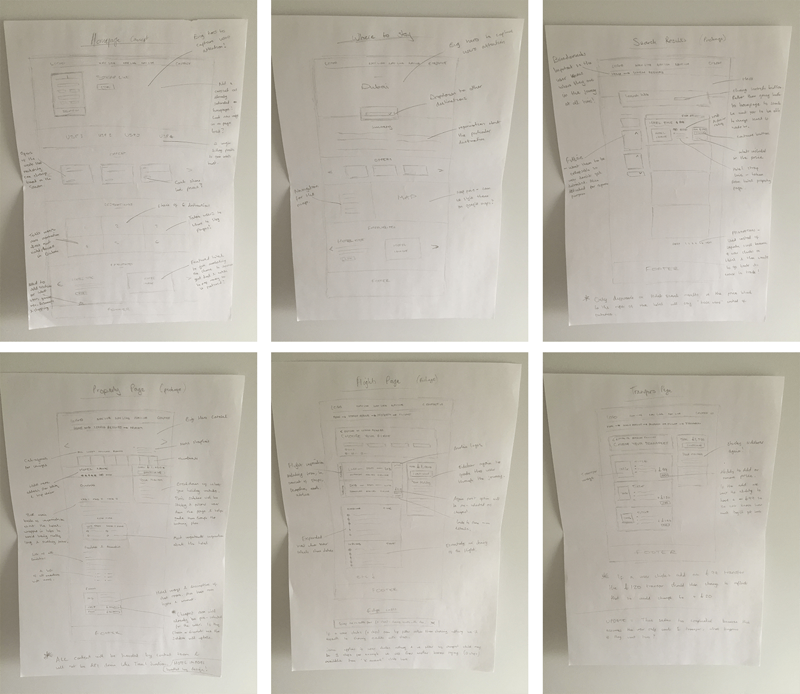
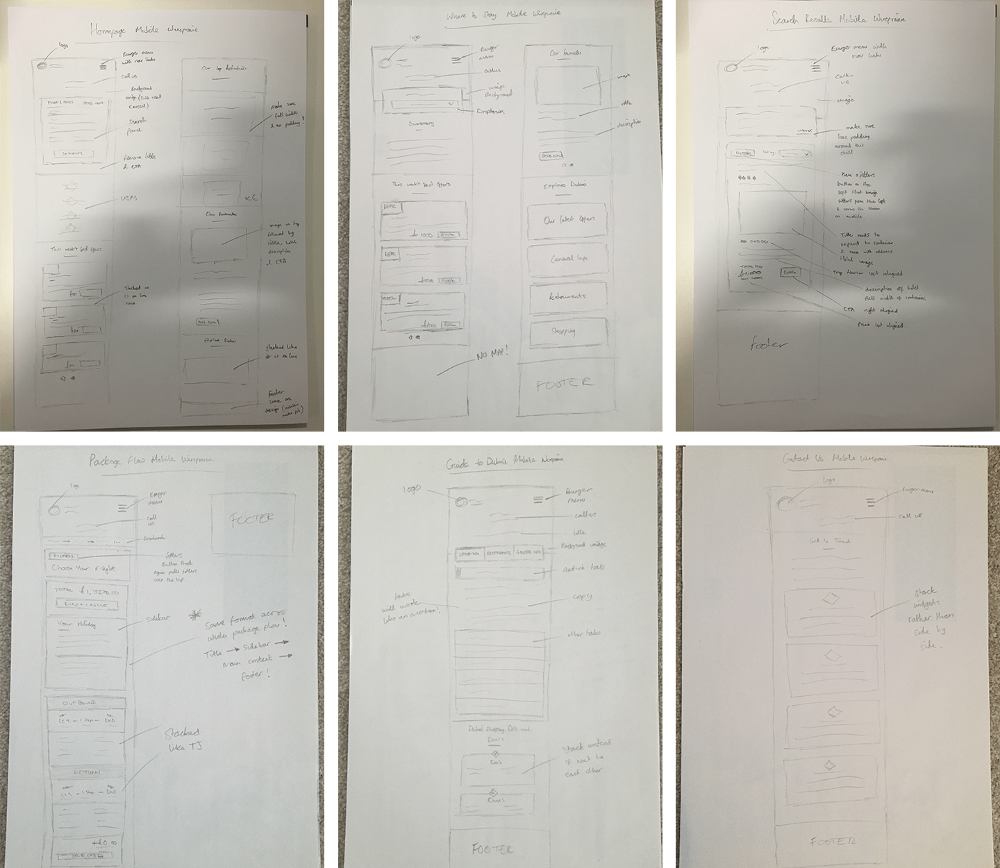
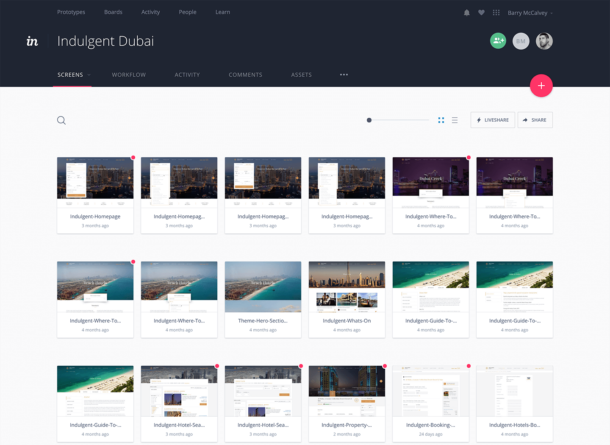
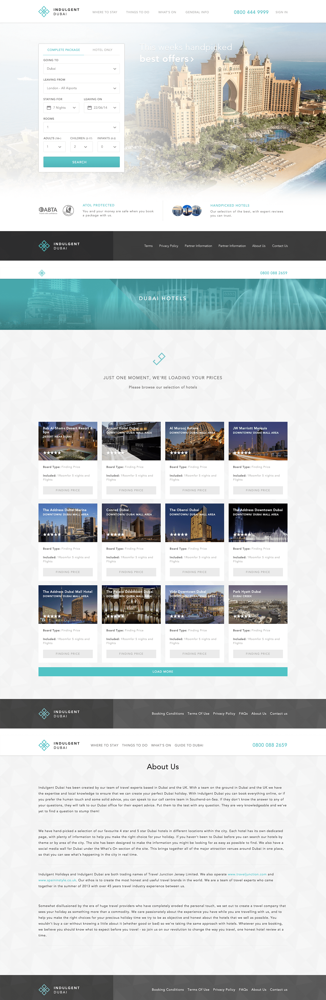
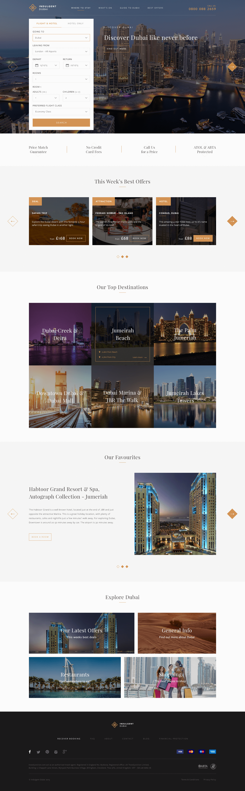
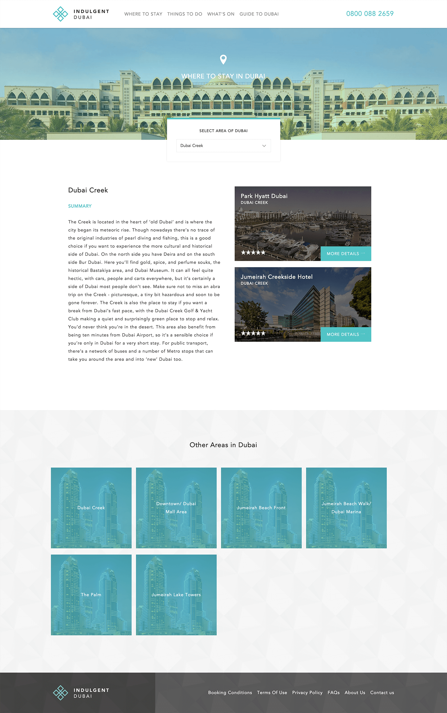
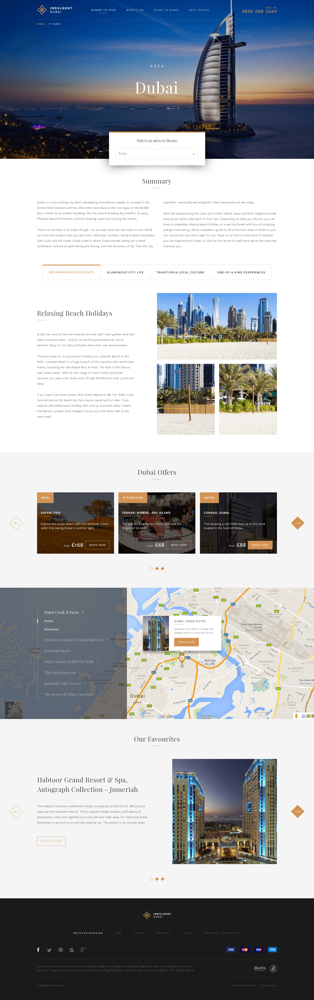
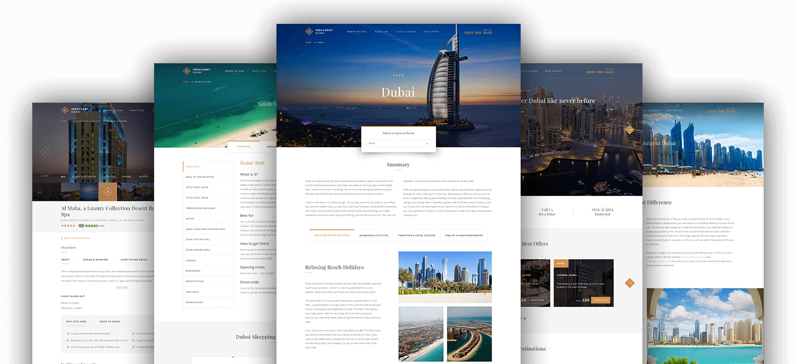

Project -
Indulgent DubaiProject
Indulgent Dubai
Role
Product Designer
Year
2016
I was part of a small team working on a complete redesign of the website. The team wanted to do a refresh of the current website as they didn't think it portrayed the indulgent feel that they were going for. This firstly consisted of finding out what they didn't like about the current website to pinpoint exactly what direction to take the new design in. We also worked very closely with our Product Managers that created epics and user stories based on business needs. In travel there are a lot of rules and regulations so it was important to understand the constraints as well.
To gain a better understanding of what the team wanted, we started by asking questions about the current website and performing user interviews with a selection of the team including the stake holders. This gave us a better understanding of what the team did and did not like about the current website and whether that aligned with our users. It was important to ask the right questions to validate our research and since we were lucky enough to have the live built version of the current website, we also carried out some in house user (guerrilla) testing. This helped to define the problem areas and find out where our users were falling down.
From carrying out user testing it was clear to us that users were having a problem with the current flow of the website. The current website was very well built and the previous team did a great job on the design but at times our users felt it often suffered from having an over complicated booking flow due to it being all on one page. The visual feedback was also important to us because as the name suggests, we wanted users to feel like they were visiting a high class website and to get a real sense of luxury.
The main feedback we received was that the booking flow was too complex and long and was also quite restrictive. After comparing the one page booking flow with other competitor websites we felt that the best approach moving forward was to make the site as simple and instinctive as possible. We felt the best way to do that was to have a step by step flow over multiple pages rather than trying to fit everything into one page. We also felt this solution was better for responsive purposes as well as this alleviated the problem of endless scrolling for the user.
Another reason for this step by step approach was because after some initial research into our target audience we found that they would not typically be young users due to the average price of the hotels we offer (some hotels starting at £6,000 per week). In knowing that, we felt that many of our users may have been put off or confused by the booking flow having some overly complex interactions in some places. In knowing all of this we felt that a much more instinctive booking flow was a better approach as most users would be much more comfortable with this.
The visual feedback we received was that users did not feel like they were visiting a high class website. The colours of the site didn't give them a sense of luxury like Dubai does. When thinking about Dubai we know that they have a very rich culture and we instantly think of gold and sand and we wanted to resonate these feelings within the redesign. The other main pain point with the current website was that the homepage did not give the users much insight into what Indulgent Dubai did and didn't offer much content or information about Dubai.
Pinterest mood board inspiration
Due to working in an agile fast paced environment we didn't have much time to focus on high fidelity wireframes because we had a very tight deadline to get the website redesigned and built. I think sketching is one of the quickest ways to get ideas down on paper and see the visual thought process. I believe sketching is also a very quick and easy way to change the designs without investing too much time into them or getting too attached to visuals.
Desktop wireframes
Mobile wireframes
For the final design we focused on using beautiful photography and bold typography to capture the users attention and emphasise how beautiful Dubai is. To make sure that we used the correct imagery throughout the site we art directed all of the images on the site including all of the imagery for each individual hotel. The main reason for this was because the images provided from the different API's did not give a very good visual representation of the hotels. Throughout the whole design it was also important to make sure the design was responisve as although we felt that our users may not book an expensive holiday on a mobile we still wanted the mobile experience to be good.
We used Invision to share all of the screens with the stake holders and the wider team which meant we could get really quick visual feedback. It also gave them a good idea of how the site would actually work as they could click through the whole flow of the website as if it were live. This also let the developers see exactly how the website should look and provided the most up to date version of the site. This helped a lot especially when working in an agile environment as new features were added and the scope changed quite often.
We designed the website using a modular design ethos. This meant that the build of the website remained consistent throughout the site and also made it a lot easier for the developers as it meant they didn't need to change multiple things across the website. They were able to build separate components using the style guide that we provided them and then build up the different components to create pages.
Throughout the whole build of the site we worked very closely with the developers to make sure all of the designs being built were the same as what we'd designed. We also used Trello to keep track of all of the new features introduced and we set up a design sign off swim lane so that all new design builds could be signed off by us before going live.
Invision screens
Previous version
New version
Previous version (Where to Stay)
New version (Where to Stay)
Final screens
We wanted to introduce some animation to increase the users experience and add to the luxurious feeling that the site was already portraying. So with this in mind I mocked up a prototype to showcase to the developers and the rest of the team. This was especially useful for the developers as with this prototype they could see exactly how long the animations were and what to animate when coding.
We wanted to carry out some performance testing on the site specifically on our search results. To do this I first researched our competitors to see how we faired compared to them. From this I found that we were actually competitive and so to improve the perceived performance I decided to test how our search results worked. To do this I prototyped two versions, version 1 loads in all of the results at the same time but makes the user wait to see the hotel results. Version 2 loads in all of the hotels as soon as possible but brings in the price afterwards when the API gets it from the providers. We found that although version 2 seemed like a good idea at first, if the price was secondary then there would be some rearranging of the actual hotels as they are brought in via lowest price first. This would mean that the page would jump around quite a lot and would ultimately annoy the user and distract them from looking at the hotels. The next step is to perform A/B testing on using a modal or client side (in browser) to decide which performs better.
I carried out user testing to validate the designs as it's always important to make sure the designs are usable and to put user needs first. To do this I used a combination of usertesting.com, Google Analytics and Inspectlet to gather feedback from our users. User testing is an ongoing process and when we introduce new features to the site it's important to gather feedback from real users to validate these.
View the website live